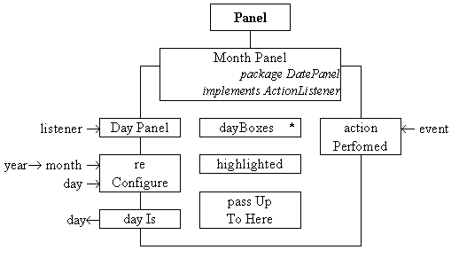

The MonthPanel class is responsible for laying out and configuring an iteration of DayBoxes so as to reflect the year and month required of it. It also has the responsibility to maintain knowledge of the currently highlighted day number in order that it can un-highlight it when required and to report the currently highlighted day number when asked. The class diagram for the MonthPanel class is given in Figure 3.14.

Figure 3.14 The MonthPanel class diagram.
The class indicates that an iteration of DayBox instances, called dayBoxes, is contained within each instance of this class as well as a primitive integer indicating which one is highlighted. The constructor requires only the identity of a listener object which is stored in the passUpToHere attribute. The constructor creates the MonthPanel without configuring it for a particular month, which is the responsibility of the reConfigure() method. This method will lay out the day numbers as appropriate to its year and month arguments, and highlight the day given. The actionPerformed() method is required to respond to the ActionEvents which will propagate from the contained dayBox instances, as described above. The dayIs() method is supplied to allow its instance parent, a DatePanel, to find out which date is currently highlighted. The implementation of this class, as far as the end of its constructor, is as follows.
0001 // Filename MonthPanel.java.
0002 // Provides an Panel which can be configured to show
0003 // the pattern of days in any particular month.
0004 //
0005 // Written for JI book, Chapter 3 see text.
0006 // Fintan Culwin, v0.2, August 1997.
0007
0008 package DatePanel;
0009
0010 import java.awt.*;
0011 import java.awt.event.*;
0012
0013 import DatePanel.DateUtility;
0014 import DatePanel.DayBox;
0015
0016
0017 class MonthPanel extends Panel
0018 implements ActionListener {
0019
0020 private static final int MAX_BOXES = 37;
0021
0022 private DayBox dayBoxes[] = new DayBox[ MAX_BOXES];
0023 private int highlighted;
0024 private int theFirstBox;
0025 private ActionListener passUpToHere;
0026
0027 private static String dayNames[] = { "Sun", "Mon", "Tue", "Wed",
0028 "Thu", "Fri", "Sat" };
0029
0030
0031 protected MonthPanel( ActionListener listener) {
0032
0033 int thisOne;
0034 Label dayLabels[] = new Label[ 7];
0035
0036 this.setLayout( new GridLayout( 7, 7, 0, 0));
0037 for ( thisOne = 0; thisOne < 7; thisOne++) {
0038 dayLabels[ thisOne] = new Label( dayNames[ thisOne],
0039 Label.CENTER);
0040 this.add( dayLabels[ thisOne]);
0041 } // End for.
0042
0043 for ( thisOne = 0; thisOne < MAX_BOXES; thisOne++) {
0044 dayBoxes[ thisOne] = new DayBox( thisOne, this);
0045 this.add( dayBoxes[ thisOne]);
0046 } // End for.
0047
0048 passUpToHere = listener;
0049 } // End MonthPanel constructor.
The constructor can be divided into a sequence of actions. It starts by establishing its' layout policy and then installs the day name Labels at the top of its area before creating all of the DayBox instances below the Labels.
The dayBoxes are laid out in rows of 7 and the longest month contains 31 days. The worst case scenario is illustrated in Figure 3.7 and occurs where the first day of the month falls on a Saturday. In this situation the first six boxes on the first row are inactive requiring a further 31 active boxes requiring a total of 37 DayBox instances. The DayBoxes are contained within the array dayBoxes which is declared and has its size established on line 0022. The private highlighted attribute is then declared on line 0023. The theFirstBox attribute, declared on line 0024, is used to record which is the first active box in the panel and as it is not a logical component of the class it is not shown on the class diagram. The value of this attribute will be set as the boxes are laid out in the reConfigure() method. The remaining attribute, passUpToHere, declared on line 0025, stores the identity of the listener object to which ActionEvents are to be dispatched when a date is selected.
In the constructor the layout policy of the DayPanel is specified as a 7 by 7 grid layout. The first row of this grid is used for the names of the days and, on lines 0037 to 0041, these are created as instances of the Label class. The text which each Label will display is supplied from a class wide array of Strings called dayNames which is declared and initialized on lines 0027 and 0028.
On lines 0043 to 0046 the 37 dayBoxes are created and added to the grid with each being informed of its ordinal position and its listener, as it is constructed. As a GridLayout policy is used all of the components on the Panel have to be the same size. As any day number, when rendered, will take up less width than the widest of the day names it can be guaranteed that the DayBoxes will be large enough to accommodate the day number string. Likewise as the day names and the day numbers are using the same Font they will also be high enough. This implies that there is a close coupling between the MonthPanel and the DayBox classes which is acceptable as they are not intended to be (re)used separately.
Before concluding, the MonthPanel constructor stores the identity of the listener object, passed in its listener argument, in the passUpToHere attribute. The DayPanel is constructed in an unconfigured state and has to be configured by a call of the reConfigure() method whose implementation is as follows.
0052 protected void reConfigure( int year, int month, int day) {
0053
0054 int maxDay = DateUtility.daysThisMonthIs( year, month);
0055 int startDay = DateUtility.firstDayOfMonthIs( year, month);
0056
0057 int thisOne;
0058
0059 theFirstBox = startDay;
0060 if ( day > maxDay) {
0061 day = maxDay;
0062 } //End if.
0063
0064 dayBoxes[ highlighted].clearHighlight();
0065
0066 for ( thisOne = 0; thisOne < MAX_BOXES; thisOne++) {
0067 if ( (thisOne < startDay) ||
0068 (thisOne >= (startDay + maxDay)) ){
0069 dayBoxes[ thisOne].setDayNumber( 0);
0070 } else {
0071 dayBoxes[ thisOne].setDayNumber( thisOne - startDay +1);
0072 } // End if.
0073 dayBoxes[ thisOne].repaint();
0074 } // End for.
0075
0076 dayBoxes[ theFirstBox + day -1].setHighlight();
0077 highlighted = theFirstBox + day -1;
0078 } // End reConfigure.
The reConfigure() method is responsible for setting the dayBoxes to indicate the year and month specified in its arguments. Its first step is to obtain the number of days in the month requested and the day of the week which theFirstDay falls on, using the appropriate DateUtility methods. The day argument indicates which day is to be highlighted and it is possible that this might specify a day number which is larger than the maximum day of the month; for example requesting the 31st day of February. To prevent this lines 0060 to 0062 limit the value of day to the maximum day of the required month.
On line 0064 any existing highlight is cleared by calling the clearHighlight() method of the dayBox[] array element indicated by the highlighed attribute. When the MonthPanel is configured for the first time none of the DayBoxes will be highlighted and so this step will clear the highlight of a box which is not currently highlighted, however as this has no adverse effects it need not be circumvented.
The loop between 0066 and 0074 sets all the dayBoxes to their appropriate state. The if condition on lines 0067 and 0068 will be true for all inactive boxes at the start and end of the array and these will have their dayNumber attribute set to zero to indicate this. All other boxes will have the appropriate dayNumber as specified on line 0071. The final steps, on lines 0076 and 0077, are concerned with highlighting the day specified and recording it in highlighted.
The dayIs() method uses the highlighted attribute and the offset to the first active box, theFirstBox, to determine the day number which the MonthPanel currently indicates, as follows.
0081 protected int dayIs(){
0082 return highlighted - theFirstBox +1;
0083 } // End dayIs;
The remaining method, actionPerformed(), is needed in order for the MonthPanel class to satisfy the requirement of the ActionListener interface. As explained above, it is called whenever a mouse release event occurs in a primed dayBox. It has to move the highlight to the dayBox indicated by the user, and propagate the event up to its listener. Its implementation is as follows.
0086 public void actionPerformed( ActionEvent event) {
0087 dayBoxes[ highlighted].clearHighlight();
0088 ((DayBox) event.getSource()).setHighlight();
0089 highlighted = ((DayBox) event.getSource()).getOrdinal();
0090 passUpToHere.actionPerformed( event);
0091 } // End actionPerformed.
On line 0087 the existing highlight is cleared and on lines 0088 and 0089 the highlight of the dayBox which generated the event is set and its ordinal location stored in highlighted. Finally, on line 0090, the event passed to this method in its argument is passed onwards to its stored passUpToHere ActionListener attribute. The ActionListener of a MonthPanel is always the DatePanel upon which it is mounted and whose implementation is as follows.